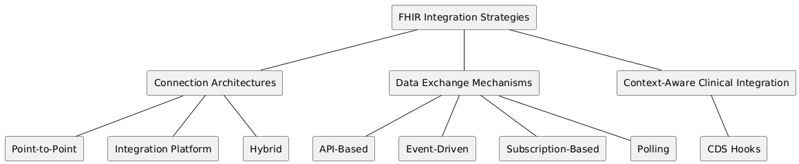
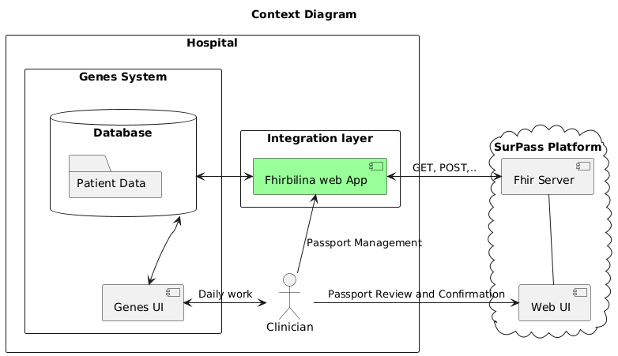
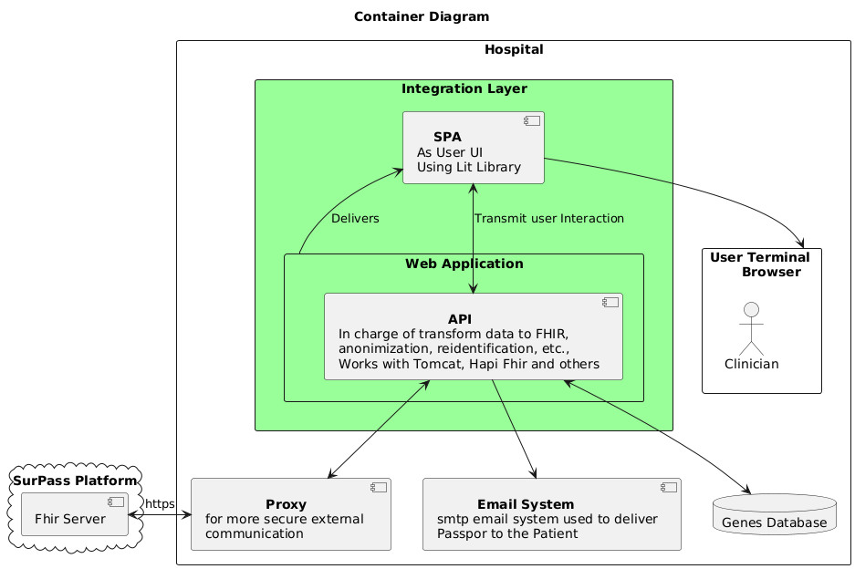

SurPass Integration
In this presentation series, we will cover the integration of the Survivorship Passport in our hospital.
Overview
We will cover:
- Integration Strategies
- Challenges
- System Architecture
- Demo
- Lessons Learned
Integration Strategies
To give a little context, we will briefly review some integration concepts that we took into account and examine them in different ways.
Connection Architectures
- Point-to-Point: Direct links between systems. Simple at first, but scales poorly.
- Integration Platform: Centralized middleware (ESB/iPaaS) manages routing, transformation, and protocol bridging.
- Hybrid: Mix of point-to-point, platform, and legacy strategies depending on the use case and system maturity.
Data Exchange Mechanisms
- API-based: RESTful FHIR APIs expose clinical and administrative data using standardized resources.
- Polling: Clients periodically query the FHIR server to check for new or updated data.
- Event-driven: Systems react to specific actions in other systems (e.g., a new Observation), using notifications or messaging queues.
- Subscription-based: Clients subscribe to changes on resources. The FHIR server pushes updates via channels like REST hooks or WebSockets.
Context-aware Clinical Integration
- CDS Hooks: Integrates clinical decision support services into EHR workflows.
Our Integration Model
- Custom Middleware App: Acts as a bridge between our internal EHR and the external FHIR server.
- API-based Access: All data exchange follows the RESTful FHIR standard.
- Manual Trigger: The request to check for data is typically initiated when the physician opens the app.
Challenges
The integration faced some challenges that were solved with more or less successful results.
- Learning the standard, services, tools, and libraries to work with FHIR.
- Managing codification systems to comply with the SurPass IG.
- Managing pseudo-anonymization and re-identification.
- Securing the system.
- Testing the system properly.

Dealing with FHIR
Dealing with FHIR wasn't the biggest challenge. Nowadays, there are many resources available online, and the official documentation is quite good.
Codification Systems
We addressed this problem using a mixed approach. On the one hand, we added some necessary codifications directly within the Genes system. On the other hand, we mapped Genes' internal keys to standard codification systems using our application.
The application checks these codes and essentially acts as a conversion table.
Pseudo-anonymization and Re-identification
To handle this, our middleware is responsible for encrypting and hashing certain internal business identifiers.
Securing Everything
We adopted a security-by-design and multi-layered approach for developing the application. This includes data logging encryption, UI-API communication encryption, HTTPS, and a reverse proxy for external data transmission.
Testing Everything
We initially used JUnit and later transitioned to JSON schemas for validating FHIR resources. We also developed a custom testing framework to test the FHIR API using synthetic data.
System Architecture
The planning of the project was done trying to accomplish some specifications.
- Must transfer the maximum number of variables possible to elaborate the SurPass.
- Must be easy to develop.
- Must use the Genes app infrastructure.
Project Schemas
Now we are going to see some schemas following the C4 model by Simon Brown.
These kinds of schemas are flexible and let us show you the general architecture.
Here you have a general Diagram.
Here are some insights into the system.
Demo
Now, we'll see a demonstration of the application.
Screenshots
Here are some screenshots showcasing the application's interface.
Video
This video provides a walkthrough of the application in action.

Lessons Learned
- It is easy to work with FHIR.
- The final middleware is tightly coupled to the Genes system, perhaps too much.
- It is not easy to scale or transfer to other systems, so we will explore other solutions for future projects.
- Managing codification systems and testing is challenging.
- We are not particularly proficient in the agile working style and need to improve.
Fin!
Next, we'll see the application stack!
Members of the IT Team
Marisa, Antonio, Vicente, Jose, Celia, Paco, Lucas